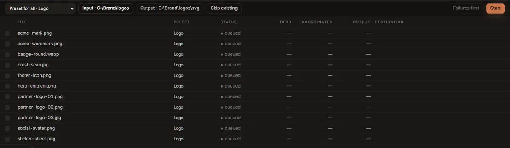

Batch
The Batch tab traces every image in a folder and writes one SVG for each. It is for a set of icons, a folder of partner logos, or a brand library.

Running a batch
- Choose a folder… picks the folder of images. Every PNG, JPEG, WebP, GIF, BMP and TIFF in it is listed, sorted by name. Subfolders are not included, and SVG files are skipped.
- Output is where the SVGs go. It starts as a folder called
svginside the input folder; press it to choose another. It is created if it does not exist. - Preset for all chooses the preset every queued file uses. To give one file a different preset, click the preset in its row and choose; the rest stay as they are.
- Skip existing (on at first) leaves a file alone if its SVG is already in the output folder, so a batch that was stopped can be run again to finish. Turn it off to overwrite.
- Start.
Each output file has the image's name with .svg: acme-mark.png becomes acme-mark.svg.
Files are traced one at a time, each at full quality: the tracer already uses every processor core on the file it is working on, so tracing several at once would not be faster. If you trace something in the Vectorize tab during a batch, it goes first, and the batch waits for it.
Pause stops before the next file, and Resume carries on; Cancel stops the run after the file in progress. The file being traced is always finished, never left half-written.
What each row says
| Column | Shows |
|---|---|
| File | The image's name. |
| Preset | The preset for this file. Once a row has run it cannot be changed, because the figures beside it were measured with that preset. |
| Status | queued, running, done, skipped or failed. |
| dE00 | The mean colour difference of this file's trace, as in the quality report. |
| Coordinates | The coordinates in its SVG. |
| Output | The SVG's size. |
| Destination | Where the SVG was written, or, for a failed row, why it failed. Hover a row to read the whole message. |
The footer shows progress, an estimate of the time left, and once rows have finished, the mean colour difference, the bytes written, and how much smaller that is than the source images.
Failures stay listed after the run. Failures first sorts them to the top, so a failed file cannot scroll away unnoticed. Export stats.csv saves every row (file, preset, status, colour difference, coordinates, bytes, seconds, destination, message) as a spreadsheet.
Which settings a batch uses
A batch starts from the controls of your last trace in the Vectorize tab, then applies each row's preset on top: the settings a preset changes from the defaults (Precision, Speckle floor, Trace size, Max colours, Colour merging, the denoiser, Black & white, Line art, Fewer paths) come from the preset, and everything else, the Output settings such as Minify and Transparent background included, comes from your last trace. Set the Output group the way you want it in Vectorize before starting a batch.
Colour groups are never used: they belong to one image.
In version 0.2.0 the Editable preset does not turn on Editable structure in a batch (it is not one of the settings listed above). To batch editable SVGs, turn Editable on in the Vectorize tab, trace any image, and run the batch.
The batch writes SVGs only. For PNGs, favicons or an asset pack, export each image from Vectorize.
Dropping files
Several files dropped on the window switch to this tab, but are not queued: a batch works on a folder. Choose the folder they are in.
Studio Lite
The Batch tab needs to read and write folders on disk, so it is not in Studio Lite. Trace the
images one at a time in Vectorize, or use the inkvec command line in a shell loop, one
inkvec logo.png -o svg/logo.svg per file.